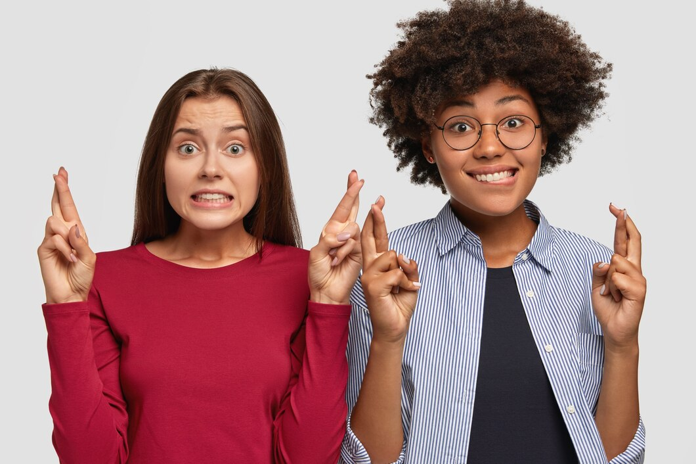
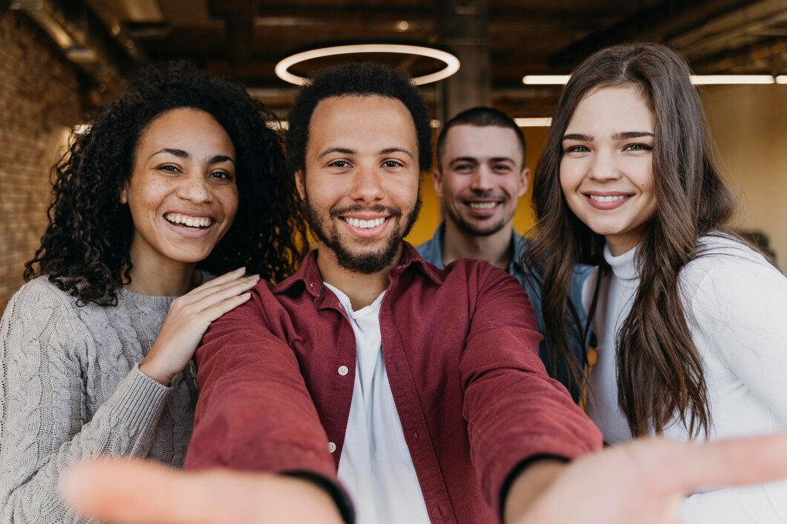
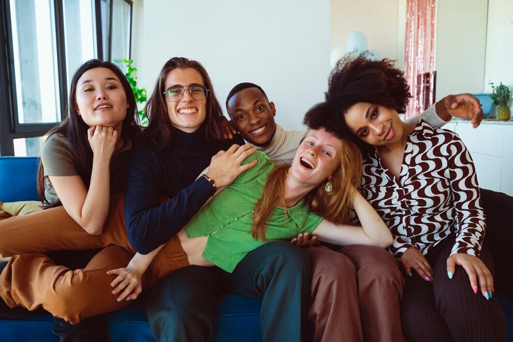
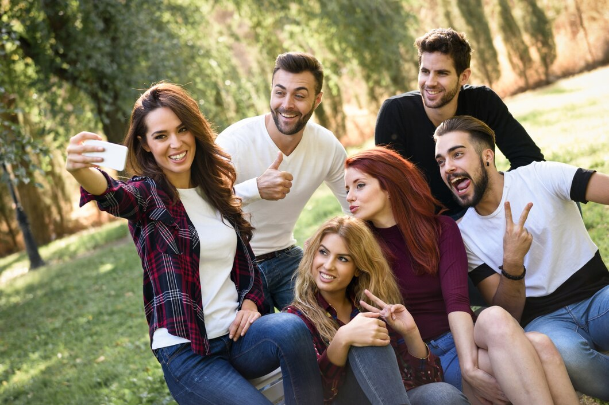
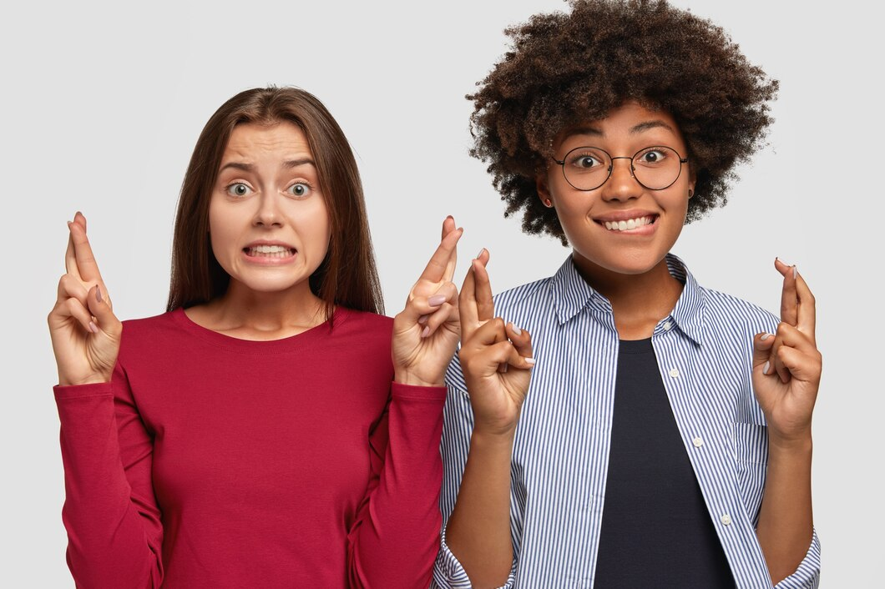
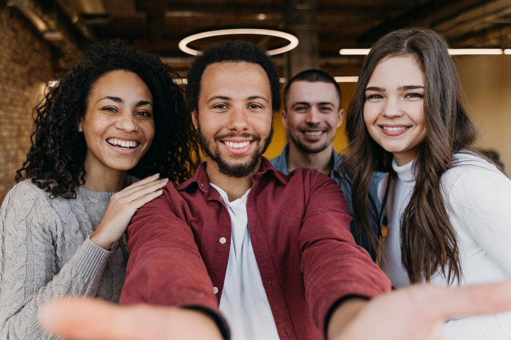
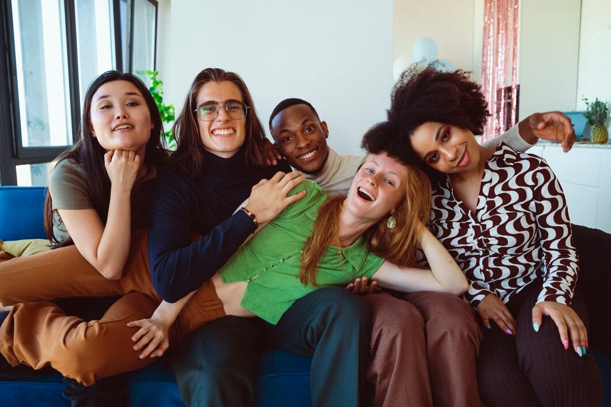
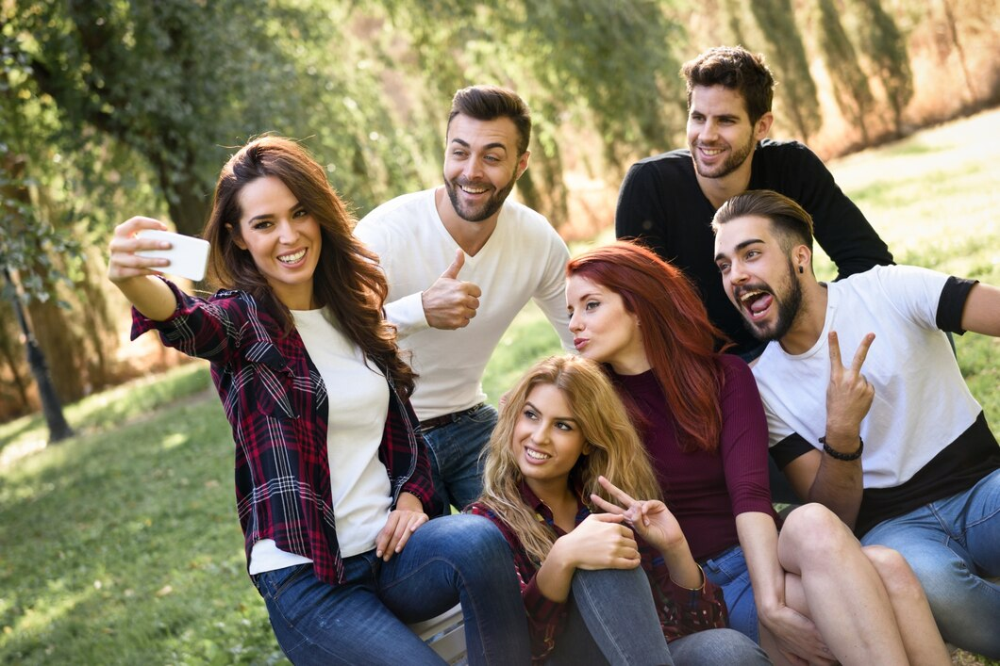

Essa página é um presente para você:
Feliz Aniversário!
Uma carta para você:
Minha querida Kerelin,
Hoje é um dia muito especial, um dia para celebrar a sua vida, a sua alegria e a sua presença em nossas vidas. Feliz aniversário!
Lembro-me de tantos momentos incríveis que compartilhamos juntas, desde o colegial até a viajem a trabalho em Portugal. Cada um desses momentos me mostrou o quão especial você é, com seu coração generoso, seu sorriso contagiante e sua capacidade de iluminar qualquer ambiente.
Você é uma pessoa que inspira a todos ao seu redor, com sua bondade, sua força e sua determinação. Sua amizade é um presente que valorizo muito, e sou grata por tê-la em minha vida.
Neste dia especial, desejo que você seja cercada de muito amor, alegria e todas as coisas boas que a vida tem a oferecer. Que seus sonhos se realizem, que seus objetivos sejam alcançados e que você continue sendo essa pessoa maravilhosa que todos nós amamos.
Parabéns pelo seu dia, Kerelin! Que este novo ano seja repleto de felicidade, saúde e sucesso. Mal posso esperar para criar mais memórias incríveis juntas.
Com todo o meu carinho, Marya.
Fotos: Momentos especiais
 






